Lecture 3: Volatility and Tail Risk
Daniel Traian PELE
Bucharest University of Economic Studies
IDA Institute Digital Assets
Blockchain Research Center
Master Blockchain for Business (MBB), FABIZ
24 November 2026
Lecture 3: Volatility and Tail Risk
Lecture 3: Volatility and Tail Risk
Daniel Traian PELE
Bucharest University of Economic Studies
IDA Institute Digital Assets
Blockchain Research Center
Master Blockchain for Business (MBB), FABIZ
24 November 2026
“These are mean zero, serially uncorrelated processes with nonconstant variances conditional on the past, but constant unconditional variances. For such processes, the recent past gives information about the one-period forecast variance.” — Engle (1982)
The lecture asks how much a crypto position can lose tomorrow and how we know that the risk model is right. The question is practical: an exchange sets margins from it, a fund reports risk with it, and a firm that holds crypto on its balance sheet needs a loss budget.
The route has five steps. It starts from the volatility clustering found in Lecture 2 and builds two volatility models, the exponentially weighted moving average (EWMA) and generalised autoregressive conditional heteroskedasticity (GARCH). It estimates the models by maximum likelihood with Student-t errors and checks them with diagnostics. It defines value at risk (VaR) and expected shortfall (ES) and computes them with four methods. It backtests the methods, comparing their past forecasts with the losses that actually occurred, with the tests of Kupiec and Christoffersen, the Basel traffic light and a check of ES. Finally it confronts the forecasts with new data after the end of the sample. The data are daily log returns in percent from 1 January 2018 to 18 September 2026, from EODHD.
In brief
The volatility models go back to Engle (1982), who introduced autoregressive conditional heteroskedasticity, and Bollerslev (1986), who generalised it to GARCH; Glosten, Jagannathan & Runkle (1993) add an asymmetric reaction to bad news. Katsiampa (2017) and Chu et al. (2017) compare GARCH models for crypto assets. For risk measures and backtests, the reading is Artzner et al. (1999) on coherent risk measures, Kupiec (1995) and Christoffersen (1998) on backtests of VaR, McNeil & Frey (2000) on tail risk with GARCH filtering, and Gneiting (2011) on the evaluation of point forecasts.
The regulation is the market-risk standard of the Basel Committee on Banking Supervision (Basel Committee, 2019), with its chapters on expected shortfall (Basel Committee, MAR33) and on backtesting (Basel Committee, MAR32). The forecast comparisons of the Appendix use Patton (2011), Diebold & Mariano (1995) and Berkowitz (2001).
A Quantinar video unit on robust portfolio choice for crypto assets accompanies the lecture. Related material is the Advanced Time Series Analysis and Forecasting (ATS) course, with its lectures on GARCH models and on VaR and ES, and a Master of Science (MSc) dissertation with VaR and ES backtests for six crypto assets. The models are estimated in Python with the package `arch`.
In brief
archRobert F. Engle Photo: Jon Demske (2022), CC BY-SA 4.0, Wikimedia Commons
These are mean zero, serially uncorrelated processes with nonconstant variances conditional on the past, but constant unconditional variances. For such processes, the recent past gives information about the one-period forecast variance.
Every business that holds or trades crypto assets needs an answer to one question: how much can the position lose tomorrow? An exchange sets the margin its clients must deposit, a fund reports the risk of its portfolio to investors, and a firm with bitcoin on its balance sheet needs a budget for losses. A second question follows at once: how do we know that the answer is right?
Lecture 2 found the two facts that make these questions hard for crypto. Volatility changes over time and comes in clusters, so yesterday's risk is not today's risk; and returns have heavy tails, so the Normal distribution understates the probability of large losses. This lecture builds models for both facts, the exponentially weighted moving average (EWMA) and generalised autoregressive conditional heteroskedasticity (GARCH) with Student-t errors, turns them into two risk measures, value at risk (VaR) and expected shortfall (ES), and tests the measures on past data, as banking regulators do.
The data are daily log returns in percent of Bitcoin, Ethereum, the S&P 500 stock index and gold from 1 January 2018 to 18 September 2026, from the data vendor EOD Historical Data (EODHD). The last section uses the five weeks of data after the end of the sample, 19 September to 23 October 2026, to see how the forecasts made on 18 September performed.
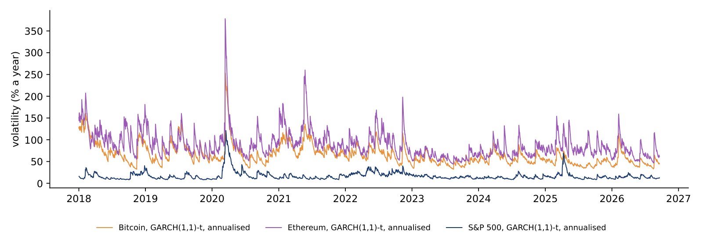
The Appendix holds optional worked examples and checks; it is not examined.
Lecture 2 found that the size of tomorrow's move is partly predictable from recent moves. The section turns this observation into models of the conditional variance: first the exponentially weighted moving average, then GARCH(1,1), and finally GARCH with Student-t errors estimated by maximum likelihood.
The left panel shows Bitcoin's daily log returns from 2018 to 18 September 2026. Calm periods, with small moves, alternate with turbulent periods, in which large moves follow each other; the single largest spike is 12 March 2020.
The right panel shows the autocorrelations of three series at lags of 1 to 30 days: the returns \(r_t\), the absolute returns \(|r_t|\) and the squared returns \(r_t^2\). The dashed lines are \(\pm 1.96/\sqrt n\), the band within which 95% of the autocorrelations would lie if the returns were independent.
The three series behave differently. For the returns, only 2 of 30 lags fall outside the band: the direction of the move is almost unpredictable. For the absolute returns, all 30 autocorrelations lie above the band, between 0.06 and 0.17: the size of the move is persistent. For the squared returns, 8 of 30 lags lie above the band; squaring gives a few extreme days, such as 12 March 2020 with \(-46\%\), a dominant weight, which hides part of the dependence that the absolute returns show.
In brief
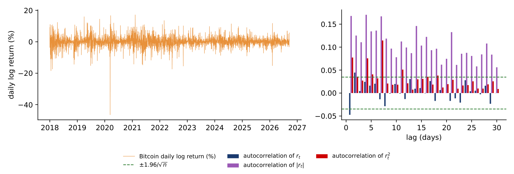
Returns are hardly autocorrelated, but their absolute and squared values are. A model that fits these facts writes the return as a constant mean plus a shock whose scale changes over time:
where \(z_t\) are independent and identically distributed (i.i.d.) draws with mean 0 and variance 1. The quantity \(\sigma_t^2 = \mathrm{Var}(r_t \mid \mathcal F_{t-1})\) is the conditional variance: the variance of tomorrow's return given \(\mathcal F_{t-1}\), the information available at the end of day \(t-1\). It is known one day in advance, which is what makes it useful for risk management.
The simplest model of \(\sigma_t^2\) is the exponentially weighted moving average (EWMA), popularised by the RiskMetrics system:
Today's variance is a mix of yesterday's variance and yesterday's squared shock, with \(\lambda = 0.94\) for daily data. Substituting the formula into itself shows that \(\sigma_t^2\) is a weighted average of all past squared shocks, with weights \((1 - \lambda)\lambda^{j-1}\) that decay geometrically with the lag \(j\). The effective memory is \(1/(1 - \lambda) \approx 17\) days.
EWMA has no long-run level. After a shock, the variance decays towards recent squared returns, not towards an average level of volatility; if the market then becomes calm, the forecast keeps falling. GARCH adds such a level.
In brief
The chart shows the weight that EWMA gives to the squared return of \(j\) days ago, for \(\lambda = 0.94\) (orange) and \(\lambda = 0.97\) (blue), and the weight of a 30-day equal-weight window (red dashed line), which gives each of the last 30 days a weight of \(1/30\) and every earlier day zero.
With \(\lambda = 0.94\) the most recent day receives 6% of the weight and day 30 receives \(0.06 \times 0.94^{29} = 1.0\%\); the first 30 days together carry \(1 - 0.94^{30} = 84\%\) of the weight. A higher \(\lambda\), such as 0.97, spreads the weight over a longer past and reacts more slowly.
The main difference from a rolling window is the absence of a cliff. With a 30-day rolling standard deviation, a crash 31 days ago suddenly drops out of the window and the volatility estimate falls on that day, although nothing happened in the market. Under EWMA the weight of the crash shrinks a little every day.
In brief
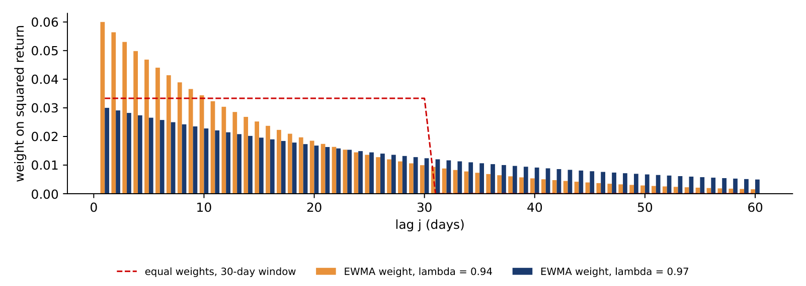
The chart follows three volatility estimates of Bitcoin through February to May 2020, each computed at the end of the day from the returns known by then and annualised with \(\sqrt{365}\). The red dashed line is the standard deviation of the last 30 daily returns, each with the same weight. The orange line is the EWMA with \(\lambda = 0.94\), updated with the day's return. The blue line is the GARCH(1,1)-t forecast for the next day; the model is introduced on the next slides and appears here only for comparison.
On 12 March 2020 Bitcoin fell by 46.5% in one day. The EWMA estimate jumps on that day to 224.9% a year and the GARCH-t forecast to 253.5%. The 30-day standard deviation rises only to 168.3%, because the crash is one of 30 equally weighted days, and it keeps rising for weeks as further large moves enter the window, to a peak of 198.0% on 6 April, 25 days after the crash.
The window then produces a jump that has nothing to do with the market. On 11 April 2020 the crash day leaves the 30-day window, and the estimate falls from 196.7% to 105.6% a year in a single day. The EWMA estimate falls on the same day only from 124.3% to 120.6%, because the weight of the crash shrinks a little every day instead of disappearing at once. This is the cliff described on the previous slide, now in real data: a rolling window reacts late to a shock and then forgets it abruptly.
In brief
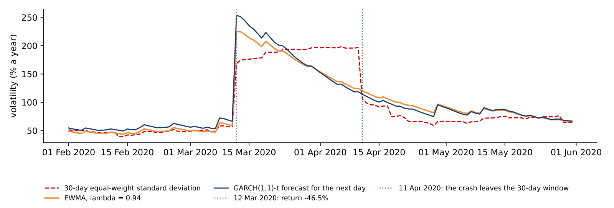
The EWMA update on the crash day uses formula (3.2) once. At the end of 11 March 2020 the EWMA variance was \(\hat\sigma^2 = 9.615\), a daily volatility of \(\sqrt{9.615} = 3.101\%\), or 59.2% a year. On 12 March the return was \(r = -46.47\%\), so the squared return is \(r^2 = 2{,}159.7\). EWMA uses the return itself as the shock, with a mean of zero.
With \(\lambda = 0.94\), the new variance is the weighted sum of the old variance and the squared return:
The daily volatility is \(\sqrt{138.62} = 11.77\%\), and per year \(11.77 \times \sqrt{365} = 224.9\%\), the value on the chart.
Of the new variance of 138.62, the crash day supplies 129.58, or 93%. From the next day on, this term is multiplied by 0.94 at every update. Thirty days later, on 11 April, it is still \(129.58 \times 0.94^{30} = 20.2\), a sizeable part of the estimate. A 30-day window, in contrast, keeps the crash at full weight for 30 days and then drops all of it on that day.
In brief
The GARCH(1,1) model of Bollerslev (1986) adds a constant to the EWMA recursion:
with \(\omega > 0\) and \(\alpha, \beta \ge 0\), so that the variance stays positive. The parameter \(\alpha\) measures the reaction to yesterday's news, the squared shock \(\varepsilon_{t-1}^2\); \(\beta\) measures the memory of yesterday's variance; and their sum \(\alpha + \beta\) is the persistence, the share of a variance shock that remains the next day.
If \(\alpha + \beta < 1\), the model is covariance-stationary, and the variance has a finite long-run, or unconditional, level \(\bar\sigma^2 = \omega/(1 - \alpha - \beta)\). The forecast made at \(t\) for \(h\) days ahead returns to this level geometrically:
The half-life of a volatility shock, the number of days until half of the deviation from the long-run level has gone, is \(h_{1/2} = \ln 0.5/\ln(\alpha + \beta)\).
If \(\alpha + \beta = 1\), the model is an integrated GARCH (IGARCH): shocks never die out and there is no finite long-run variance. With \(\omega > 0\) the forecast then rises linearly with the horizon, \(\mathrm{E}_t[\sigma_{t+h}^2] = \sigma_{t+1}^2 + (h - 1)\,\omega\). EWMA is the special case \(\omega = 0\), \(\alpha = 1 - \lambda\), \(\beta = \lambda\), whose forecast is flat: \(\mathrm{E}_t[\sigma_{t+h}^2] = \sigma_{t+1}^2\) at every horizon.
In brief
Dividing returns by the GARCH volatility removes the clustering, but the resulting shocks \(z_t\) still have heavy tails. The model therefore lets \(z_t\) follow a Student-t distribution with \(\nu > 2\) degrees of freedom, rescaled to variance 1. The resulting model is called GARCH-t.
The parameters \(\theta = (\mu, \omega, \alpha, \beta, \nu)\) are estimated by maximum likelihood. For given \(\theta\), the variances \(\sigma_t^2\) are computed recursively with formula (3.3), and the log-likelihood adds up the log densities of the observed returns under the Student-t; the estimate \(\hat\theta\) is the value that makes the observed data most probable. The formula is in the Appendix. The standard errors are robust, or sandwich, standard errors, which are less sensitive than the usual ones to errors in the assumed distribution.
The degrees of freedom \(\nu\) measure the thickness of the tails. As \(\nu\) grows, the Student-t approaches the Normal distribution; values close to 2 mean very heavy tails. Moments of order \(k\) exist only for \(k < \nu\), so with \(\nu \le 4\) the fourth moment \(\mathrm{E}[z_t^4]\) is infinite. This matters for the diagnostics later in the lecture, because some standard tests assume that this moment is finite.
In brief
Section summary
Volatility clustering leads to models of the conditional variance. EWMA averages past squared shocks with geometric weights and has no long-run level; GARCH(1,1) adds a constant, and when \(\alpha + \beta < 1\) the variance reverts to a long-run level with a measurable half-life. Student-t errors capture the heavy tails that remain after the variance is modelled.
The section estimates GARCH(1,1) with Student-t errors for Bitcoin, Ethereum, the S&P 500 and gold, shows the conditional volatility and the forecasts by horizon that follow from the estimates, and checks with diagnostic tests whether the model has removed the clustering.
The table reports the estimates of formula (3.3) with Student-t errors and a constant mean, for daily log returns in percent from 2018 to 18 September 2026, with robust standard errors in brackets. The sample has 3,183 days for each crypto asset, 2,190 for the S&P 500 and 2,269 for gold.
For Bitcoin, \(\hat\alpha = 0.076\) and \(\hat\beta = 0.924\); for Ethereum, \(\hat\alpha = 0.117\) and \(\hat\beta = 0.883\). In both cases the persistence \(\hat\alpha + \hat\beta\) is exactly 1, marked with an asterisk: the estimation imposes \(\alpha + \beta \le 1\), and the estimate sits at this bound. With \(\hat\omega > 0\) the crypto models are IGARCH: in this sample there is no finite long-run variance and no mean reversion of volatility, and the half-life is infinite.
The S&P 500 behaves differently. Its persistence is 0.981, so a shock to volatility halves in 36 trading days, and its long-run volatility is \(\sqrt{252\,\hat\omega/(1 - \hat\alpha - \hat\beta)} = 21.6\%\) a year. Gold has a persistence of 0.992 and a half-life of 90 days.
The degrees of freedom are \(\hat\nu = 3.13\) for Bitcoin and 3.19 for Ethereum, against 5.85 for the S&P 500 and 4.06 for gold. Crypto shocks are therefore heavy-tailed even after the time-varying volatility has been removed: with \(\nu\) near 3 the fourth moment of \(z_t\) does not exist.
In brief
| \(n\) | \(\hat\omega\) | \(\hat\alpha\) | \(\hat\beta\) | \(\hat\alpha + \hat\beta\) | half-life (days) | \(\hat\nu\) | |
|---|---|---|---|---|---|---|---|
| Bitcoin | 3 183 | \(0.144\) (\(0.058\)) | \(0.076\) (\(0.012\)) | \(0.924\) (\(0.012\)) | \(1^{*}\) | \(\infty\) | \(3.13\) (\(0.15\)) |
| Ethereum | 3 183 | \(0.550\) (\(0.373\)) | \(0.117\) (\(0.038\)) | \(0.883\) (\(0.042\)) | \(1^{*}\) | \(\infty\) | \(3.19\) (\(0.20\)) |
| S&P 500 | 2 190 | \(0.035\) (\(0.009\)) | \(0.162\) (\(0.022\)) | \(0.819\) (\(0.021\)) | \(0.981\) | \(36\) | \(5.85\) (\(0.71\)) |
| Gold | 2 269 | \(0.015\) (\(0.008\)) | \(0.061\) (\(0.018\)) | \(0.931\) (\(0.021\)) | \(0.992\) | \(90\) | \(4.06\) (\(0.38\)) |
If the GARCH(1,1)-t model is right, the standardised residuals \(\hat z_t = (r_t - \hat\mu)/\hat\sigma_t\) are draws from a Student-t distribution with \(\hat\nu = 3.13\) degrees of freedom, scaled to variance 1. The left panel compares their histogram with this density and with the Normal density of the same variance. The vertical axis is logarithmic, so that the tails, where the densities are thousands of times smaller than in the centre, remain visible.
The right panel counts the days on which \(|\hat z_t|\) exceeds a threshold \(c\), from 2 to 8, and compares the counts with the numbers expected in \(n = 3{,}183\) days, \(n\,P(|z_t| > c)\), under each distribution.
The Normal fails in the tails by orders of magnitude. Beyond 4 standard deviations, 18 days are observed; the Normal expects 0.2 such days in the whole sample, while the Student-t expects 19.2. Beyond 6, 3 days are observed, among them 12 March 2020 with \(\hat z_t = -13.3\); the Normal expects \(6 \times 10^{-6}\) days, the Student-t 5.7.
Dividing by the GARCH volatility therefore removes the clustering of large moves, but not their size: even after filtering, the shocks of Bitcoin have heavy tails. The Student-t with \(\hat\nu \approx 3\) describes the tail well up to about 4 standard deviations and somewhat overstates the number of very extreme days.
In brief
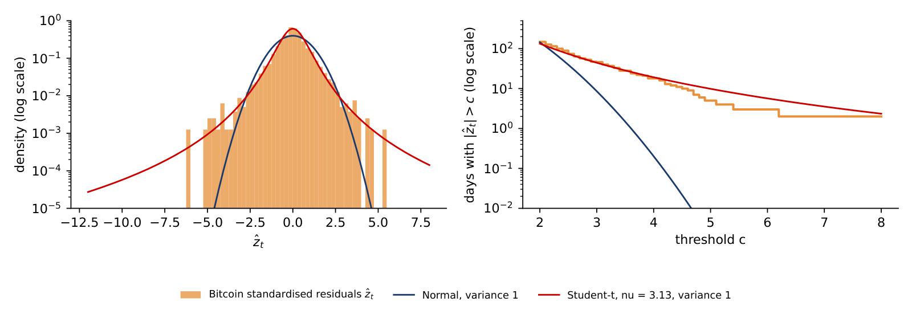
Are the Bitcoin estimates special? The chart estimates the same GARCH(1,1)-t model on the same sample, 1 January 2018 to 18 September 2026, for eleven crypto assets with a full history, the S&P 500 and gold. The left panel shows the persistence \(\hat\alpha + \hat\beta\), the right panel the degrees of freedom \(\hat\nu\).
Six of the eleven crypto assets reach the bound \(\hat\alpha + \hat\beta = 1\): Bitcoin, Ethereum, XRP, BNB, Dogecoin and Tron. The lowest persistence among them is Cardano's, 0.963, which still means a half-life of about 18 days. The S&P 500 (0.981) and gold (0.992) lie in the same range; what sets crypto apart is how often the estimate reaches the bound.
The tails differ more clearly. The degrees of freedom of the crypto assets range from 2.90 for XRP to 5.05 for Chainlink, and ten of the eleven lie below 4, where the fourth moment of the shocks is infinite. The S&P 500 has \(\hat\nu = 5.85\) and gold 4.06. Heavy tails after GARCH filtering are a property of the asset class, not of Bitcoin alone.
In brief
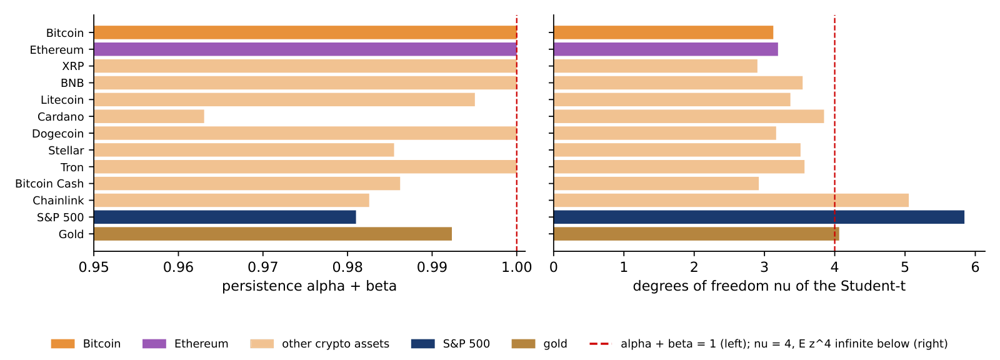
The chart shows the estimated conditional volatility \(\hat\sigma_t\) of the GARCH(1,1)-t models, annualised as \(\hat\sigma_t\sqrt{A}\) with \(A = 365\) for crypto and \(A = 252\) for the S&P 500. Each point is the volatility the model expected for that day, given the returns up to the day before.
The peaks come in the COVID-19 crash of March 2020: 253.5% a year for Bitcoin on 13 March 2020, 378.4% for Ethereum, and 121.4% for the S&P 500 on 17 March 2020. Each peak is followed by a gradual decay, the pattern of formula (3.3), and smaller spikes follow later shocks.
On 18 September 2026, the last day of the sample, the conditional volatility was 44.6% for Bitcoin, 61.2% for Ethereum and 12.7% for the S&P 500. Bitcoin's median over the sample was 59.2%, so the sample ended in a relatively calm period for Bitcoin.
In brief
The GARCH recursion (3.3) turns the state of one day into the forecast for the next. For Bitcoin the estimates are \(\hat\omega = 0.144\), \(\hat\alpha = 0.076\), \(\hat\beta = 0.924\) and \(\hat\mu = 0.056\). On the last day of the sample, \(T\) = 18 September 2026, the conditional variance was \(\hat\sigma_T^2 = 5.453\), a daily volatility of 2.335%, or 44.6% a year. Bitcoin rose by \(r_T = 5.720\%\) that day, so the shock was \(\hat\varepsilon_T = 5.720 - 0.056 = 5.664\) and its square \(\hat\varepsilon_T^2 = 32.08\).
The forecast for 19 September adds the three terms:
The daily volatility is \(\sqrt{7.623} = 2.761\%\), or \(2.761 \times \sqrt{365} = 52.7\%\) a year. This is the input of the VaR worked example later in the lecture.
The large daily rise lifted the forecast volatility from 44.6% to 52.7% a year. A fall of 5.7% would have done exactly the same, since GARCH(1,1) reacts to the squared shock and ignores its sign; the Appendix tests whether falls should count more. Two days ahead, with \(\hat\alpha + \hat\beta = 1\), the forecast adds \(\hat\omega\) once more: \(\mathrm{E}_T[\sigma^2_{T+2}] = 7.623 + 0.144 = 7.767\), or 53.2% a year.
In brief
The left panel shows what formula (3.4) implies for a stationary GARCH after a shock that doubles the variance: the forecast variance relative to the long-run level, for horizons of 1 to 250 days. For the S&P 500, with persistence 0.981, the half-life is \(\ln 0.5/\ln 0.981 = 36.1\) days, and after 250 days the shock has practically disappeared. For gold, with persistence 0.992, the half-life is 90 days, and after 250 days the forecast variance is still 15% above the long-run level.
The right panel shows the forecasts for Bitcoin made on 18 September 2026, in volatility per year. Here there is no long-run level to return to.
The GARCH-t model, with \(\hat\alpha + \hat\beta = 1\) and \(\hat\omega = 0.144\), adds \(\hat\omega\) to the forecast variance every day, so the forecast volatility rises from 52.7% a year at \(h = 1\) to 126% at \(h = 250\). EWMA, with \(\omega = 0\), gives a flat forecast of 44.9% at every horizon. Only in this flat case does the common rule of scaling today's volatility by \(\sqrt h\) to obtain the \(h\)-day volatility hold exactly. The two models start from different levels and diverge with the horizon, which shows how much a long-horizon forecast depends on the model chosen.
In brief
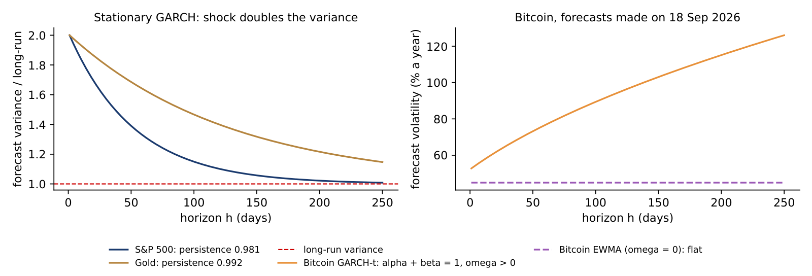
If the model is right, the standardised residuals \(\hat z_t = (r_t - \hat\mu)/\hat\sigma_t\) should be i.i.d.: dividing by the conditional volatility should remove the clustering. The check applies the Ljung–Box test of Lecture 2 to \(\hat z_t^2\) with 10 lags, against the \(\chi^2_{10}\) distribution, whose 5% critical value is 18.31.
The table compares the statistic for the raw squared returns \(r_t^2\) with the statistic for \(\hat z_t^2\). For Bitcoin it falls from 97.6 to 5.5 (p-value 0.855), for Ethereum from 131.8 to 8.8 (0.552), and for the S&P 500 from 2,338.8 to 12.0 (0.283). For these three assets we do not detect autocorrelation in \(\hat z_t^2\) at lags 1–10; this does not prove that all dependence is gone. For gold the statistic falls from 434.4 to 27.9, with a p-value of 0.002: some dependence remains, and a richer model, with asymmetry or with regime changes in 2025–2026, is needed.
Two caveats apply. The \(\chi^2_{10}\) reference distribution requires a finite fourth moment, \(\mathrm{E}[z_t^4] < \infty\), and with \(\hat\nu \approx 3\) this moment is infinite, which the next slide addresses. And the sample here is 2018–2026; the value \(Q(10) = 212.7\) of Lecture 2 used the longer sample since 2014, so the two numbers are not comparable.
In brief
| \(Q(10)\) of \(r_t^2\) | \(Q(10)\) of \(\hat z_t^2\) | p-value for \(\hat z_t^2\) (\(\chi^2_{10}\)) | |
|---|---|---|---|
| Bitcoin | \(97.6\) | \(5.5\) | \(0.855\) |
| Ethereum | \(131.8\) | \(8.8\) | \(0.552\) |
| S&P 500 | \(2\,338.8\) | \(12.0\) | \(0.283\) |
| Gold | \(434.4\) | \(27.9\) | \(0.002\) |
Two checks avoid the assumption of a finite fourth moment. The permutation test reshuffles the residuals \(\hat z_t\) in random order 999 times and computes \(Q(10)\) of \(\hat z_t^2\) for each reshuffled series; the p-value is the share of reshuffled statistics at least as large as the observed one. Reshuffling destroys any time dependence but keeps the distribution, heavy tails included, so the reference is built from the data themselves. The second check applies the Ljung–Box test to the absolute residuals \(|\hat z_t|\), which needs only a finite variance of \(|z_t|\), that is \(\nu > 2\).
For Bitcoin the two answers differ. The \(\chi^2\) p-value for \(\hat z_t^2\) is 0.855, but the permutation p-value is 0.232: the usual reference is unreliable with tails this heavy, although neither p-value rejects. The test on \(|\hat z_t|\) gives \(Q(10) = 24.5\) with a p-value of 0.006, so the absolute residuals are still autocorrelated: GARCH(1,1)-t leaves some clustering in the size of Bitcoin's shocks.
For Ethereum and the S&P 500 no remaining dependence is detected by any of the checks. Gold is rejected by all three, with a permutation p-value of 0.012 and \(Q(10) = 41.8\) for \(|\hat z_t|\). All these p-values treat the estimated parameters as if they were known, so the estimation error is ignored.
In brief
| \(Q(10)\) of \(\hat z_t^2\) | permutation p | \(Q(10)\) of \(|\hat z_t|\) | p-value (\(\chi^2_{10}\)) | |
|---|---|---|---|---|
| Bitcoin | \(5.5\) | \(0.232\) | \(24.5\) | \(0.006\) |
| Ethereum | \(8.8\) | \(0.291\) | \(10.5\) | \(0.395\) |
| S&P 500 | \(12.0\) | \(0.244\) | \(8.3\) | \(0.597\) |
| Gold | \(27.9\) | \(0.012\) | \(41.8\) | \(< 0.001\) |
Section summary
GARCH(1,1)-t gives crypto a persistence of 1 and about 3 degrees of freedom: volatility shocks do not die out in this sample, and the shocks remain heavy-tailed after filtering. The S&P 500 and gold revert to a long-run level, with half-lives of 36 and 90 days. The model removes most of the clustering in squared residuals, but heavy tails make the usual test unreliable, and robust checks still find some dependence for Bitcoin and gold.
A volatility forecast is not yet a loss figure. The section defines the two risk measures used in practice and in regulation, value at risk and expected shortfall, compares their properties, computes them with four methods and applies them to a Bitcoin position on 19 September 2026.
Let \(r_{t+1}\) be tomorrow's return, with conditional distribution \(F_t\) given the information today, and let \(p\) be a small probability, such as 1%. The value at risk at level \(p\) is the loss that is exceeded with probability \(p\), and the expected shortfall is the average loss on the days when that threshold is exceeded:
Here \(F_t^{-1}(p)\) is the \(p\)-quantile of the return, a negative number for small \(p\), so VaR is a positive loss. VaR 1% is the loss exceeded on one day in a hundred; ES 2.5% is the average loss on the worst 2.5% of days.
Artzner et al. (1999) list four properties that a coherent risk measure \(\rho\) should have: it is monotone, translation-invariant, positively homogeneous and subadditive, \(\rho(X + Y) \le \rho(X) + \rho(Y)\), which means that combining two positions never adds risk. ES is coherent. VaR is not subadditive in general, so with VaR diversification can appear to raise risk. ES also sees the size of the losses in the tail, while VaR sees only the threshold where the tail starts.
For banks that use internal models for market-risk capital, the Basel standard (Basel Committee, 2019) replaced VaR 1% by ES 2.5% (Basel Committee, MAR33); VaR 1% stays in the backtesting of these models (Basel Committee, MAR32). Under the Normal distribution the two levels give almost the same number, \(\mathrm{VaR}_{1\%} = 2.326\,\sigma\) and \(\mathrm{ES}_{2.5\%} = 2.338\,\sigma\); under heavy tails ES is larger.
In brief
The two risk measures are points of a forecast distribution. The chart draws the GARCH(1,1)-t forecast density of Bitcoin's return on 19 September 2026, with \(\hat\sigma_{t+1} = 2.76\%\) and \(\hat\nu = 3.13\) (the method is explained on the next slides), and a Normal density with the same mean and standard deviation. The right panel enlarges the left tail and marks \(-\mathrm{VaR}_{1\%}\) with solid lines and \(-\mathrm{ES}_{2.5\%}\) with dotted lines, in orange for the Student-t and in blue for the Normal.
The two densities have the same variance but not the same shape. The Student-t is more peaked in the centre and puts more mass far in the tails, and less in between. At the 1% level its VaR is the larger one, 7.23% against 6.37%, and its ES 2.5% even more so, 7.97% against 6.40%. A loss beyond the Normal VaR 1% has a probability of 1.41% under the Student-t, not 1%.
The ranking depends on the level. The two VaRs are equal at \(p = 1.92\%\); above that level the Normal quantile is the further one, and at \(p = 5\%\) the Normal VaR is 4.48% against 3.78% for the Student-t. Heavy tails therefore matter most for the small probabilities that risk management cares about, which is why the choice of distribution changes VaR 1% and ES 2.5% more than it changes a 5% quantile.
In brief
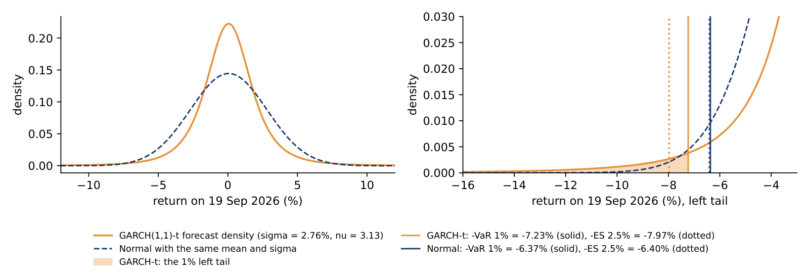
The four methods differ in how they describe the distribution of tomorrow's return. The Normal method assumes a Normal distribution with the sample mean \(\hat\mu\) and standard deviation \(\hat\sigma\): \(\mathrm{VaR}_p = -(\hat\mu + \hat\sigma\,\Phi^{-1}(p))\), where \(\Phi^{-1}(p)\) is the \(p\)-quantile of the standard Normal distribution, and ES uses the standard Normal density \(\varphi\), as on the slide. Historical simulation (HS) makes no distributional assumption: VaR is minus the empirical \(p\)-quantile of the last \(W\) returns, and ES is minus the mean of the returns below that quantile.
The EWMA method uses the Normal formulas with tomorrow's volatility \(\hat\sigma_{t+1}\) from formula (3.2) and a mean of zero. The GARCH-t method uses the GARCH volatility forecast and the quantile of the Student-t. With \(q = t_\nu^{-1}(p)\), the \(p\)-quantile of the standard Student-t, and the rescaling factor \(s = \sqrt{(\nu - 2)/\nu}\), which turns the Student-t into a distribution with variance 1,
where \(f_\nu\) is the density of the standard Student-t.
For longer horizons, the rule \(\mathrm{VaR}_h \approx \sqrt h\,\mathrm{VaR}_1\) holds only for i.i.d. Normal returns. With GARCH, the \(h\)-day risk must be built from the variance forecasts \(\mathrm{E}_t[\sigma_{t+j}^2]\) of formula (3.4), which, as the previous section showed, can rise or fall with the horizon.
In brief
On 18 September 2026 the GARCH-t model gives three inputs for the next day: the volatility forecast \(\hat\sigma_{t+1} = 2.761\%\), the mean \(\hat\mu = 0.06\%\) and the degrees of freedom \(\hat\nu = 3.126\). The rescaling factor is \(s = \sqrt{1.126/3.126} = 0.600\).
For VaR 1%, the 1% quantile of the Student-t with 3.126 degrees of freedom is \(q = -4.398\). Formula (3.6) gives \(\mathrm{VaR}_{1\%} = -0.06 + 2.761 \times 0.600 \times 4.398 = 7.23\%\): on one day in a hundred, the model expects a loss larger than 7.23% in log-return terms.
For ES 2.5%, the 2.5% quantile is \(q = -3.111\), and the tail factor \(\frac{f_\nu(q)}{p}\,\frac{\nu + q^2}{\nu - 1}\) equals 4.844. Then \(\mathrm{ES}_{2.5\%} = -0.06 + 2.761 \times 0.600 \times 4.844 = 7.97\%\): on the worst 2.5% of days, the average loss is expected to be 7.97%.
A Normal distribution with the same volatility gives \(2.761 \times 2.338 = 6.45\%\) for ES 2.5%. The heavy tail of the Student-t adds 1.5 percentage points to the expected loss in the tail.
In brief
The chart compares the four methods for Bitcoin at a one-day horizon, with forecasts for 19 September 2026 made on 18 September: for each method, VaR 1% (blue) and ES 2.5% (orange) in percent. The numbers are in the table on the next slide.
The two Normal-based methods, the Normal on the full sample and EWMA, give ES almost equal to VaR, as the Normal formulas imply. The two methods that allow heavy tails, historical simulation and GARCH-t, give an ES above VaR, by 13% and 10% respectively. The methods also disagree on the level: the Normal and GARCH-t put VaR above 7%, historical simulation and EWMA near 5.5%.
In brief
The table gives the one-day losses of a long position of 1 million USD in Bitcoin, in log-return percent and in USD. VaR in USD is \(10^6(1 - e^{-\mathrm{VaR}/100})\); this is exact, because the USD loss is a monotone function of the return, so the quantile of the return gives the quantile of the USD loss. ES in USD is computed differently: it is the mean of the USD loss \(10^6(1 - e^{r/100})\) over the 2.5% tail of \(r\), which is not the same as applying the conversion to the ES in percent.
The VaR 1% ranges from 5.43% (52,854 USD) for historical simulation over 500 days to 7.75% (74,567 USD) for the Normal on 2018–2026; GARCH-t gives 7.23% (69,753 USD) and EWMA 5.47% (53,208 USD). The ES 2.5% ranges from 5.49% for EWMA to 7.97% (75,761 USD) for GARCH-t.
The Normal and EWMA give \(\mathrm{ES}_{2.5\%} \approx \mathrm{VaR}_{1\%}\), so they ignore the heavy tail. Under GARCH-t, ES exceeds VaR by 10%, the cost of the heavy tail with \(\hat\nu = 3.13\). The four VaR figures differ by up to 43%: the choice of model is itself a source of risk, called model risk. Which figure deserves trust is decided by the backtest of the next section.
In brief
| Method | VaR 1% (%) | ES 2.5% (%) | VaR, USD per 1m | ES, USD per 1m |
|---|---|---|---|---|
| Normal, 2018–2026 | \(7.75\) | \(7.79\) | 74 567 | 74 862 |
| Historical simulation, 500 days | \(5.43\) | \(6.12\) | 52 854 | 59 002 |
| EWMA, \(\lambda = 0.94\), Normal | \(5.47\) | \(5.49\) | 53 208 | 53 433 |
| GARCH(1,1)-t | \(7.23\) | \(7.97\) | 69 753 | 75 761 |
Section summary
VaR is a loss threshold and ES the average loss beyond it; ES is coherent and is the regulatory measure for banks' internal models, while VaR 1% is used for backtesting. For Bitcoin on 19 September 2026 the four methods give a VaR 1% between 5.4% and 7.8%, and only the methods with heavy tails give an ES clearly above VaR.
A risk model makes a promise: VaR 1% should be exceeded on 1% of days, and the exceedances should not come in clusters. The section tests these promises for the four methods on Bitcoin from 2020 to 2026, with the Kupiec and Christoffersen tests, the Basel traffic light and a check of the ES level.
A hit, or violation, occurs on day \(t\) when the loss exceeds the VaR forecast for that day: \(I_t = 1\) if \(r_t < -\mathrm{VaR}_{p,t}\) and \(I_t = 0\) otherwise. If the model is correct, the hits are i.i.d. Bernoulli draws with probability \(p\): they occur at the promised rate and independently of each other.
The unconditional coverage test of Kupiec (1995) checks the rate. With \(x\) hits in \(n\) days and an observed hit rate \(\hat\pi = x/n\), it compares the likelihood of the hit sequence under the promised rate \(p\) with its likelihood under \(\hat\pi\):
which follows a \(\chi^2_1\) distribution if the model is correct; the 5% critical value is 3.84.
The independence test of Christoffersen (1998) checks whether a hit today makes a hit tomorrow more likely. It counts \(n_{ij}\), the number of days in state \(j\) that follow a day in state \(i\), where state 1 is a hit, and compares the probability of a hit after a hit, \(\hat\pi_{11}\), with the probability of a hit after a quiet day, \(\hat\pi_{01}\); the statistic \(\mathrm{LR}_{ind}\) on the slide also follows \(\chi^2_1\). The conditional coverage test adds the two, \(\mathrm{LR}_{cc} = \mathrm{LR}_{uc} + \mathrm{LR}_{ind}\), and follows \(\chi^2_2\).
The Basel traffic light (Basel Committee, MAR32) counts the hits of VaR 1% over the last 250 days: 0 to 4 hits is the green zone, 5 to 9 the amber zone (called "yellow" in the 1996 rules), and 10 or more the red zone.
In brief
Before the formal tests, the chart shows how the hits of each method build up over the backtest period, 2,453 days from 1 January 2020 to 18 September 2026. Each step line counts the days so far on which Bitcoin's return fell below the method's VaR 1%. The dashed green line is the expected count \(np\) after \(n\) days, and the shaded band is the range between the 2.5% and the 97.5% quantile of the binomial distribution \(\mathrm{Bin}(n, 0.01)\), the count of a correct VaR.
In 2020 the methods are hard to tell apart: by the end of the year Normal-250, EWMA and GARCH-t have 4 hits each and historical simulation 2, against 3.7 expected. The difference builds up later. Normal-250 leaves the band in June 2021 and EWMA in April 2022, and both keep drifting away, to 45 and 51 hits, far above the final range of 15 to 35. GARCH-t ends at 28 hits and historical simulation at 25. GARCH-t lies above the band on 7% of the days, first on 13 September 2022; historical simulation never does.
The band is computed day by day, so a line that touches it once is not rejected by a test; the tests on the next slides use the whole hit sequence. The chart shows something the tests do not: when a method begins to fail.
In brief
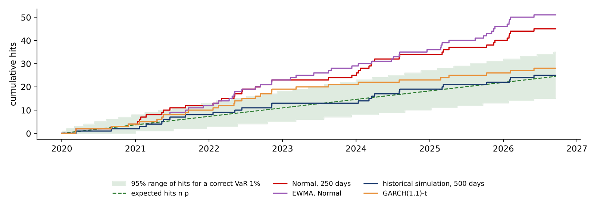
The Normal VaR estimated on a moving window of 250 days is tested on Bitcoin from 2020 to 2026: \(n = 2{,}453\) days, \(x = 45\) hits and \(p = 0.01\), so \(\hat\pi = 45/2{,}453 = 0.0183\).
The log-likelihood under the promised rate is \(\ln L_0 = 2{,}408\ln 0.99 + 45\ln 0.01 = -231.4\), and under the observed rate \(\ln L_1 = 2{,}408\ln(1 - 0.0183) + 45\ln 0.0183 = -224.5\). Formula (3.7) gives \(\mathrm{LR}_{uc} = -2(\ln L_0 - \ln L_1) = 13.84\), well above the critical value of 3.84.
The model is rejected: it produced 45 hits where 24.5 were expected, almost twice the promised frequency. For a bank this is a capital issue, because the Basel rules multiply market-risk capital by a factor that rises with the number of exceptions.
In brief
The Christoffersen test asks whether a hit makes another hit tomorrow more likely. It is applied here to the GARCH-t VaR 1% of Bitcoin, which had 28 hits in 2,453 days, so there are 2,452 pairs of consecutive days. Each pair is classified by the state on the first day and the state on the second, with 1 for a hit: \(n_{00} = 2{,}397\) pairs of two calm days, \(n_{01} = 27\) hits after a calm day, \(n_{10} = 27\) calm days after a hit and \(n_{11} = 1\) pair of consecutive hits, on 8 and 9 November 2022.
The hit probabilities follow from the counts. After a calm day the hit rate is \(\hat\pi_{01} = 27/2{,}424 = 0.0111\); after a hit it is \(\hat\pi_{11} = 1/28 = 0.0357\); over all pairs it is \(\hat\pi = 28/2{,}452 = 0.0114\).
Under independence the same rate \(\hat\pi\) applies after any day:
With rates that depend on the previous day,
The statistic is \(\mathrm{LR}_{ind} = -2(\ln L_0 - \ln L_1) = 0.95\), below the 5% critical value of 3.84, with a p-value of 0.329: we do not reject independence. A hit after a hit is 3.2 times as likely as after a calm day, but the estimate rests on a single pair of consecutive hits, and one pair is weak evidence.
In brief
The table backtests the four methods on 2,453 out-of-sample days, from 1 January 2020 to 18 September 2026, for which \(np = 24.5\) hits are expected. Each forecast uses only data up to the previous day; the GARCH-t parameters are re-estimated every 21 days on all data up to the previous day, and the volatility is filtered daily. The columns give the number of hits, the hit rate, the three likelihood-ratio statistics with their p-values, the hits in the last 250 days with the resulting Basel zone, and the average VaR.
The Normal method on 250 days had 45 hits (1.83%) and EWMA had 51 (2.08%). Both fail unconditional coverage, with \(\mathrm{LR}_{uc} = 13.84\) and 22.01 and p-values below 0.001: they produce almost twice as many hits as they promise. Their hits are not clustered, since \(\mathrm{LR}_{ind}\) is close to zero, so the failure is the level, not the timing. Both are in the amber zone, with 5 hits in the last 250 days.
Historical simulation on 500 days had 25 hits (1.02%) and GARCH-t 28 (1.14%). For these two methods none of the three tests rejects, and both are in the green zone, with 3 and 2 hits in the last 250 days. They reach this coverage in different ways: GARCH-t reacts to news, while HS needs a higher average VaR, 8.64% against 8.12%, for a similar result. A higher average VaR means more capital held against the position.
In brief
| Method | hits | rate (%) | \(\mathrm{LR}_{uc}\) (p) | \(\mathrm{LR}_{ind}\) (p) | \(\mathrm{LR}_{cc}\) (p) | last 250 | zone | mean VaR (%) |
|---|---|---|---|---|---|---|---|---|
| Normal, 250 days | 45 | \(1.83\) | \(13.84\) (\(<\)0.001) | \(0.04\) (0.850) | \(13.88\) (0.001) | 5 | amber | \(7.16\) |
| HS, 500 days | 25 | \(1.02\) | \(0.01\) (0.924) | \(1.29\) (0.256) | \(1.30\) (0.523) | 3 | green | \(8.64\) |
| EWMA, Normal | 51 | \(2.08\) | \(22.01\) (\(<\)0.001) | \(0.00\) (0.952) | \(22.01\) (\(<\)0.001) | 5 | amber | \(6.78\) |
| GARCH(1,1)-t | 28 | \(1.14\) | \(0.47\) (0.491) | \(0.95\) (0.329) | \(1.43\) (0.490) | 2 | green | \(8.12\) |
The chart shows Bitcoin's daily returns from 2020 to 2026 (light purple), the negative of the VaR 1% of historical simulation over 500 days (blue) and of GARCH-t (orange), and the hits of GARCH-t as red points, the days when the return fell below the orange line.
The HS line moves in steps and lags the market: it changes only when an extreme day enters or leaves the 500-day window. The GARCH-t line widens within days after a shock, most visibly right after the crash of March 2020, and narrows again in calm periods.
The hits of GARCH-t are spread over the six years, without clusters, in line with the independence test (\(\mathrm{LR}_{ind}\), p-value 0.329). A model whose hits came in bursts would leave a firm exposed precisely in the periods of stress.
In brief
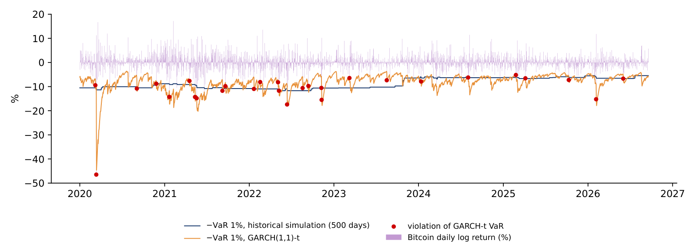
ES is harder to backtest than VaR. Gneiting (2011) shows that ES is not elicitable on its own: there is no scoring function whose expected value is minimised by the correct ES forecast, as there is for a quantile. A simple check in the spirit of McNeil & Frey (2000) looks only at the days in the tail, when the return falls below the 2.5% quantile forecast, and compares the realised loss with the predicted ES:
where \(N\) is the number of tail days. If the ES level is right, the realised tail losses match the predictions on average and \(\bar R \approx 1\).
The table reports \(\bar R\) with a 95% interval from a bootstrap of the \(N\) ratios with 9,999 resamples, which treats the tail days as independent; the expected number of tail days is \(0.025 \times 2{,}453 = 61.3\). For the two Normal-based methods \(\bar R\) is 1.26 (Normal, 250 days) and 1.31 (EWMA): realised tail losses are 26–31% larger than predicted, and both intervals lie above 1.
For HS and GARCH-t, \(\bar R\) is 1.00 and 0.97 and the intervals contain 1, so there is no evidence against their ES level in this sample. GARCH-t, however, had 76 tail days against 61.3 expected; the Kupiec test at 2.5% gives \(\mathrm{LR}_{uc} = 3.35\) with a p-value of 0.067, close to rejection. The check is a preliminary diagnostic, not a formal ES backtest.
In brief
| Method | tail days \(N\) | rate (%) | mean loss (%) | mean ES (%) | \(\bar R\) | 95% interval for \(\bar R\) |
|---|---|---|---|---|---|---|
| Normal, 250 days | 71 | \(2.89\) | \(8.48\) | \(6.72\) | \(1.26\) | \(1.13\) – \(1.44\) |
| HS, 500 days | 61 | \(2.49\) | \(9.05\) | \(9.14\) | \(1.00\) | \(0.89\) – \(1.15\) |
| EWMA, Normal | 76 | \(3.10\) | \(7.94\) | \(6.11\) | \(1.31\) | \(1.17\) – \(1.49\) |
| GARCH(1,1)-t | 76 | \(3.10\) | \(7.92\) | \(8.04\) | \(0.97\) | \(0.88\) – \(1.09\) |
The ratio \(\bar R\) of the previous slide is an average. The chart shows the individual days behind it for two methods, the Normal on 250 days and GARCH-t. Each dot is a day on which Bitcoin's return fell below the method's forecast 2.5% quantile; its horizontal position is the ES 2.5% predicted the day before and its vertical position the loss that occurred. On the dashed line the loss equals the prediction; for a correct ES the tail days scatter around this line with a mean ratio of 1.
For the Normal method, 43 of the 71 tail days lie above the line, 61%, and the mean ratio is \(\bar R = 1.26\). The predicted ES is too small on a typical tail day, not only on the crash. For GARCH-t the picture is different: only 18 of 76 tail days lie above the line, 24%, and the median ratio is 0.83, so on a typical tail day the loss is smaller than predicted. A few very large losses lift the mean ratio to \(\bar R = 0.97\).
The largest of these losses is 12 March 2020, a fall of 46.5%, drawn at the top edge of both panels. The Normal method had predicted an ES of 7.7%, GARCH-t one of 10.2%. No method in this lecture expected a loss of that size on that day, which is why a single day can move the average ratio so much.
In brief
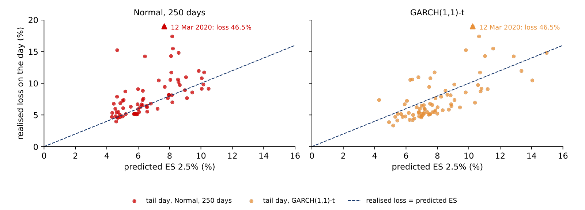
Section summary
Over 2020–2026 the Normal and EWMA methods fail the coverage test, with 45 and 51 hits where 24.5 were expected, and their ES understates realised tail losses by 26–31%. Historical simulation and GARCH-t pass all three VaR tests and the ES check; GARCH-t does so with a lower average VaR, because it reacts to news.
All the estimates of the lecture use data up to 18 September 2026. The section uses the five weeks of data that arrived afterwards to compare the forecasts with what happened, and asks how much such a short window can show.
The sample ends on 18 September 2026, day \(T\); EODHD data up to 23 October 2026 are now available. The GARCH-t parameters are frozen at their values of 18 September, and only the volatility filter is updated with the new returns:
where \(\hat\sigma^2_{t|t-1}\) is the variance forecast for day \(t\) made with the information up to day \(t-1\), and \(H\) is the length of the new window.
The new data answer two questions. Was the level of volatility right? The realised volatility, \(\sqrt{A\,\overline{r^2}}\) with \(\overline{r^2}\) the mean squared return of the window, is compared with the 18 September forecast for the whole window, \(\sqrt{A\,\frac1H\sum_h E_T\sigma^2_{T+h}}\). Did the VaR hold? The number of hits is compared with the expected \(np\).
The window is short: 35 calendar days for crypto and 25 trading days for the S&P 500 and gold. The section therefore also asks how much 35 days can tell us about a risk model.
In brief
The table lists what each method updates in the new window. GARCH-t keeps its parameters and its estimation window fixed at 18 September, but its volatility state is updated each day with the previous return, formula (3.9). EWMA has only \(\lambda\) fixed and updates its state daily. The Normal VaR rolled forward re-estimates its mean and standard deviation each day on an expanding window from 2018 to the previous day, while the Normal used in the volatility table is fixed at its 2018–18 September estimates. Historical simulation uses the last 500 days up to the previous day, a rolling window.
The two comparisons use different forecasts. The volatility level on the next slide is the forecast made on 18 September for the whole window, never updated. The one-step forecasts, the VaR rolled forward here and the quasi-likelihood (QLIKE) loss and probability integral transform (PIT) of the Appendix, are updated as in the table. The comparison is therefore between forecasts built differently: GARCH-t and EWMA react to each new return, the Normal and HS only through their windows.
In brief
| Method | parameters | volatility state | estimation window |
|---|---|---|---|
| GARCH-t | fixed on 18 Sep | updated daily with \(r_{t-1}\) | 2018 – 18 Sep, fixed |
| EWMA, \(\lambda = 0.94\) | \(\lambda\) fixed | updated daily with \(r_{t-1}\) | none |
| Normal, VaR rolled forward | mean and sd re-estimated daily | none | 2018 to \(t-1\), expanding |
| Normal, volatility table | fixed on 18 Sep | none | 2018 – 18 Sep, fixed |
| HS, 500 days | none | none | last 500 days to \(t-1\), rolling |
The table compares, for each asset, the return over the window, three volatility forecasts and the realised volatility from 19 September to 23 October 2026, all annualised in percent. The forecasts are the GARCH-t volatility for the first day, \(\hat\sigma_{T+1}\), the GARCH-t forecast averaged over the window, the EWMA volatility of 18 September and the Normal volatility of 2018–2026.
Every model over-predicted. Bitcoin's realised volatility was 31.8%, against a GARCH-t forecast of 60.6% on average over the window, a ratio of 0.52; it equals the calm level of August 2026. Ethereum's realised volatility was 36.1% against 93.2% (ratio 0.39), the S&P 500's 10.3% against 14.4% (0.72), and gold's 19.3% against 23.2% (0.83).
For the two crypto assets part of the gap comes from the model itself. With \(\hat\alpha + \hat\beta = 1\) and \(\hat\omega > 0\), the forecast of 18 September rises linearly in variance, because there is no long-run level to revert to: for Bitcoin from 52.7% for 19 September to 67.6% on day 35 of the window, 60.6% on average.
Gold fell by 9.3% over the window, yet its realised volatility, 19.3%, was below its GARCH forecast of 23.2%. A large price move over five weeks is not the same as high volatility: a steady decline in small daily steps has low volatility.
In brief
| annualised, % | Bitcoin | Ethereum | S&P 500 | Gold |
|---|---|---|---|---|
| return over the window (%) | \(0.2\) | \(-9.1\) | \(-0.4\) | \(-9.3\) |
| GARCH-t \(\hat\sigma_{T+1}\), 18 Sep | \(52.7\) | \(72.6\) | \(11.9\) | \(23.3\) |
| GARCH-t, average over the window | \(60.6\) | \(93.2\) | \(14.4\) | \(23.2\) |
| EWMA, 18 Sep | \(44.9\) | \(58.8\) | \(10.4\) | \(23.9\) |
| Normal, 2018–2026 | \(64.1\) | \(84.3\) | \(19.2\) | \(16.9\) |
| realised, 19 Sep – 23 Oct | \(\mathbf{31.8}\) | \(\mathbf{36.1}\) | \(\mathbf{10.3}\) | \(\mathbf{19.3}\) |
| realised / GARCH forecast | \(0.52\) | \(0.39\) | \(0.72\) | \(0.83\) |
The chart follows the one-day VaR 1% of the four methods over the 35 days of the window, plotted as negative numbers below Bitcoin's daily returns. The Normal line (red) is almost flat near \(-7.7\%\), the HS line (blue) is constant at \(-5.4\%\), and the EWMA (green dashed) and GARCH-t (purple) lines move up as the calm period continues, after a jump following the 6.5% rise of 21 September.
The table below the chart gives the mean VaR over the window, the mean capital this implies for a position of 1 million USD, and the number of hits, of which 0.35 were expected.
No method had a hit: all four lines stayed below every return. The worst day was 22 October, with \(-3.27\%\), 0.63 of that day's GARCH-t VaR. The forecast made on 18 September for 19 September was a VaR of 7.23%, and the realised return was \(+0.41\%\). The methods differed in the capital they required: on average 74,428 USD per million for the Normal, 60,870 for GARCH-t, 52,854 for HS and 45,500 for EWMA.
In brief
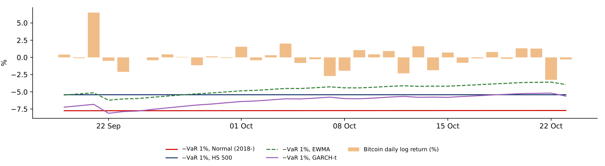
| 1-day VaR 1%, 35 days | Normal | HS 500 | EWMA | GARCH-t |
|---|---|---|---|---|
| mean VaR (%) | \(7.73\) | \(5.43\) | \(4.66\) | \(6.28\) |
| mean capital per 1m USD | 74 428 | 52 854 | 45 500 | 60 870 |
| hits (expected 0.35) | 0 | 0 | 0 | 0 |
If the 1% VaR is correct, the number of hits \(X\) in 35 days follows a binomial distribution with 35 trials and probability 0.01. The probability of zero hits is then
and the Kupiec statistic for zero hits is \(\mathrm{LR}_{uc} = -2 \cdot 35\ln 0.99 = 0.70\), with a p-value of 0.40. A correct model has no hit in 35 days seven times out of ten.
A wrong model passes almost as often. A model with a true hit rate of 2%, like the Normal on 250 days in the long backtest, shows zero hits in 35 days with probability \(0.98^{35} = 0.493\). To detect a rate of 2% against 1% with probability 0.8 at the 5% level, with an exact one-sided binomial test, about 900 days are needed (905).
Zero hits in five weeks is therefore no evidence for any of the four methods: all four "pass", but the test has almost no power. The methods differ in the capital they require, with GARCH-t asking for 35% more than EWMA in this window, and the long backtest, not this window, says which one is right. A short window is better used with the whole predicted density than with the hits alone, as the Appendix does.
In brief
Section summary
In the five weeks after the sample, every model over-predicted volatility, crypto by about half, partly because the integrated GARCH forecast rises with the horizon. No VaR method had a hit, but with 35 days even a model with twice the promised hit rate would pass half of the time; only the long backtest can discriminate between the methods.
GARCH(1,1)-t fits crypto returns with \(\hat\alpha + \hat\beta = 1\), an IGARCH, and \(\hat\nu \approx 3.1\): volatility shocks do not die out in this sample and the shocks are very heavy-tailed even after filtering. The diagnostics detect no autocorrelation in Bitcoin's \(\hat z_t^2\), but with \(\hat\nu \approx 3\) the usual reference distribution is unreliable, and the check on \(|\hat z_t|\) still finds some dependence (p-value 0.006).
Bitcoin's one-day VaR 1% for 19 September 2026 ranges from 5.4% to 7.8% depending on the method, and the ES 2.5% reaches 8.0%. In the backtest of 2020–2026 the Normal and EWMA methods fail the Kupiec test, with 45 and 51 hits where 24.5 were expected, while for HS and GARCH-t no test rejects. With Normal-based ES, realised tail losses are 26–31% larger than predicted, with 95% intervals above 1. Out of sample, to 23 October 2026, all models over-predicted volatility, and 35 days cannot discriminate between the VaR methods.
In brief
The five exercises use the numbers of the lecture. Each asks for an interpretation in a few sentences: what a parameter, test or zone implies for a risk decision, and what it leaves open. Lecture 4 turns to stablecoins, where a loss of the peg is described by its size, its duration and its probability; a daily VaR of returns gives only a loss threshold for one day, none of the three.
In brief
The Appendix holds optional material for self-study; it is not examined. It gives the Student-t likelihood, tests for an asymmetric reaction to news, compares Normal and Student-t residuals, follows the traffic light through time, measures the risk that Bitcoin adds to a portfolio, and evaluates the volatility and density forecasts of the out-of-sample window.
The slide writes out the log-likelihood \(\ell(\theta)\) of the GARCH-t model. Each term is the log density of a Student-t with \(\nu\) degrees of freedom, scaled to variance \(\sigma_t^2\) from the GARCH recursion, evaluated at the shock \(\varepsilon_t = r_t - \mu\); \(\Gamma\) is the gamma function, which appears in the normalising constant of the density. The estimate \(\hat\theta\) maximises \(\ell(\theta)\) by numerical optimisation under the constraints \(\omega > 0\), \(\alpha, \beta \ge 0\), \(\alpha + \beta \le 1\) and \(\nu > 2\); the constraint \(\alpha + \beta \le 1\) is the bound at which the crypto estimates sit.
In brief
The GJR-GARCH model of Glosten, Jagannathan & Runkle (1993), named after its authors Glosten, Jagannathan and Runkle, adds a term \(\gamma\) that applies only after a negative shock; \(\gamma > 0\) means that a fall raises volatility more than a rise of the same size, the leverage effect of equity markets, and the persistence becomes \(\alpha + \beta + \gamma/2\). The test of \(\gamma = 0\) is a likelihood-ratio (LR) test with critical value 3.84, and the Akaike information criterion (AIC), \(2k - 2\ell\) with \(k\) parameters, compares fit after a penalty for the extra parameter, lower being better. For the S&P 500, \(\hat\gamma = 0.249\) (\(t = 6.25\), LR 75.89) and the AIC prefers GJR: falls raise volatility much more than rises. For gold \(\hat\gamma = -0.060\), so rises raise volatility more than falls. For Bitcoin (\(\hat\gamma = 0.013\), LR p-value 0.408) and Ethereum (0.028, p-value 0.275) no asymmetry is detected, and the AIC prefers the plain GARCH(1,1).
In brief
| \(\hat\gamma\) | \(t(\hat\gamma)\) | \(\hat\alpha + \hat\beta + \hat\gamma/2\) | LR | p-value | AIC: GARCH / GJR | |
|---|---|---|---|---|---|---|
| Bitcoin | \(0.013\) | \(0.72\) | \(1.000\) | \(0.68\) | \(0.408\) | \(15\,518\) / \(15\,520\) |
| Ethereum | \(0.028\) | \(0.74\) | \(0.998\) | \(1.19\) | \(0.275\) | \(17\,493\) / \(17\,494\) |
| S&P 500 | \(0.249\) | \(6.25\) | \(0.968\) | \(75.89\) | \(< 0.001\) | \(5\,902\) / \(5\,828\) |
| Gold | \(-0.060\) | \(-3.21\) | \(0.995\) | \(14.27\) | \(< 0.001\) | \(5\,980\) / \(5\,968\) |
A news impact curve shows today's volatility as a function of yesterday's shock, with yesterday's variance held at its sample median, here from GJR-GARCH-t; the red dashed line is a symmetric reaction with the same average. For the S&P 500 (left) the curve is strongly asymmetric: a \(-3\%\) day raises volatility to 27.0% a year, while a \(+3\%\) day leaves it at 12.9%. For Bitcoin (right) the curve is almost symmetric, with \(\hat\gamma = 0.013\): good and bad news raise volatility alike, so the leverage effect of equities does not carry over to Bitcoin.
In brief
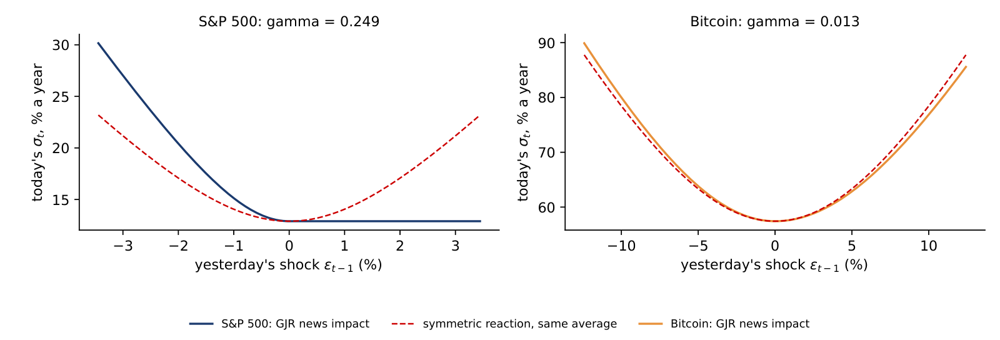
The chart plots Bitcoin's standardised residuals \(\hat z_t\) against the quantiles of the Normal distribution (left) and of the fitted Student-t with \(\hat\nu = 3.13\) (right); correct errors would lie on the 45-degree line. Against the Normal, the residuals bend away in both tails, so the Normal fails even after GARCH filtering. Against the Student-t, the points follow the line closely except for the single most extreme day, 12 March 2020, with \(\hat z_t = -13.3\) against a Student-t quantile of \(-10.5\).
In brief
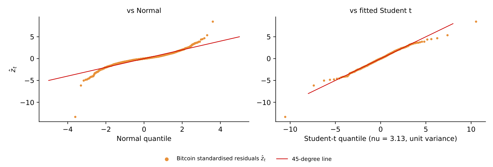
The chart counts, for each day from late 2020 to 2026, the VaR 1% hits of each method in the previous 250 days, against the background of the Basel green, amber and red zones. The share of days in the amber or red zone was 50.3% for the Normal on 250 days, 75.6% for EWMA, of which 3.4% in the red zone, 10.5% for historical simulation and 22.9% for GARCH-t, which was never red. A model can pass a full-sample test and still spend long periods in the amber zone, so it must be monitored continuously.
In brief
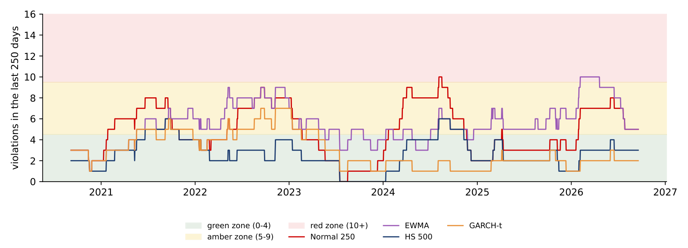
For a portfolio with weights \(w\) and covariance matrix \(\Sigma\) of the returns, the volatility is \(\sigma_p = \sqrt{w^\top\Sigma w}\). Doubling all weights doubles \(\sigma_p\), so by Euler's theorem the volatility is the sum of the risk contributions (RC) of the assets, \(\mathrm{RC}_i = w_i(\Sigma w)_i/\sigma_p\), where \((\Sigma w)_i\) is the covariance of asset \(i\) with the portfolio. The same decomposition holds for ES, where with historical data the contribution of asset \(i\) is minus its average weighted return on the days in the portfolio's tail. The ratio \(\mathrm{RC}_i/\sigma_p\) is the share of risk due to asset \(i\), to be compared with its weight \(w_i\). The slide also gives the weights of the minimum-variance (MV) portfolio, the portfolio with the lowest volatility.
In brief
A portfolio holds 95% in the S&P 500, with an annual volatility of 19.2%, and 5% in Bitcoin, with 63.3%, and the correlation between their daily simple returns over 2018–2026 is 0.29. The portfolio variance is 376.2, so \(\sigma_p = 19.40\%\). The risk contributions are 18.02 percentage points for the S&P 500, 92.9% of the total, and 1.38 points for Bitcoin, 7.1%; the two add up to \(\sigma_p\). Bitcoin carries 7.1% of the risk with 5% of the money. In the 60/40 portfolio of the next slide the same 5% carries 11.9% of the risk, because Treasuries diversify the equity risk but not the Bitcoin risk.
In brief
The table adds Bitcoin to a portfolio of the S&P 500 and long US Treasuries in proportion 60/40, on 2,190 common days of 2018–2026, with daily simple returns and daily rebalancing. The S&P 500 is the price index, without dividends, and the Treasuries are the iShares 20+ Year Treasury Bond exchange-traded fund (TLT), with distributions reinvested. The correlations are 0.29 between Bitcoin and the S&P 500, \(-0.02\) between Bitcoin and Treasuries and \(-0.14\) between the S&P 500 and Treasuries. A Bitcoin weight of 5% raises the volatility from 12.25% to 12.83% a year and carries 11.9% of the volatility and 11.5% of the daily ES 2.5%; a weight of 10% carries 29.4% and 26.9%. The minimum-variance weights are 40.5% in the S&P 500, 59.6% in Treasuries and \(-0.15\%\) in Bitcoin: Bitcoin does not reduce the risk of this portfolio.
In brief
| Bitcoin weight (%) | volatility (% a year) | ES 2.5% (%, daily) | Bitcoin share of volatility (%) | Bitcoin share of ES (%) |
|---|---|---|---|---|
| 0 | \(12.25\) | \(2.26\) | \(0.0\) | \(0.0\) |
| 1 | \(12.31\) | \(2.29\) | \(1.6\) | \(2.0\) |
| 2.5 | \(12.45\) | \(2.32\) | \(4.8\) | \(5.3\) |
| 5 | \(12.83\) | \(2.40\) | \(11.9\) | \(11.5\) |
| 10 | \(14.08\) | \(2.60\) | \(29.4\) | \(26.9\) |
The chart plots Bitcoin's share of the portfolio volatility (orange) and of the portfolio ES 2.5% (red) against its weight, with the weight itself as a dashed reference line. The risk share grows faster than the weight, from 1.6 times the weight at 1% to 2.9 times at 10%. A position limit for crypto should therefore be set on its risk contribution, not on its weight. The Quantinar unit on robust Markowitz portfolios gives alternatives to the sample covariance matrix.
In brief
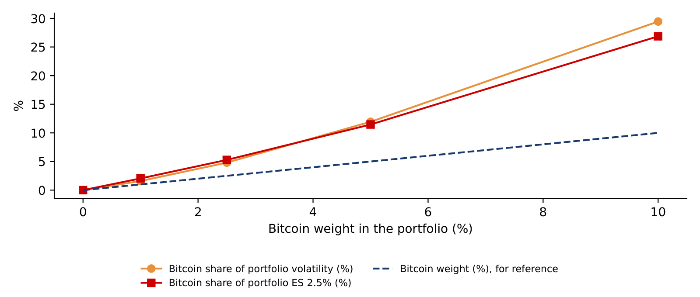
The chart shows long-only minimum-variance frontiers, the lowest volatility attainable for each mean return without short positions, for the S&P 500 and Treasuries with and without Bitcoin, on common days of 2018–2026; the mean is the daily simple return times 252, and both axes are annualised. Bitcoin had a mean return of 40.0% at a volatility of 63.3%, the S&P 500 13.9% at 19.2% (without dividends) and TLT \(-1.1\%\) at 15.3%; the compound growth of the net asset value was 21.7%, 12.8% and \(-2.2\%\) a year. Adding Bitcoin extends the frontier only at high volatility; at the low-risk end the two frontiers coincide. The means are in-sample, so the gain shown is an upper bound on the benefit.
In brief
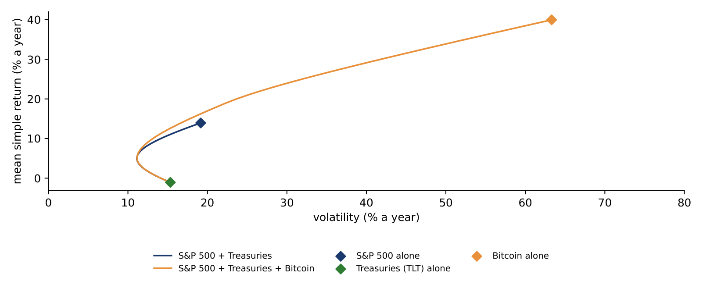
The four panels show the daily absolute returns of the out-of-sample window as bars, the one-step GARCH-t forecast with parameters frozen on 18 September (red line), the forecast path made on 18 September (blue dashed line) and the realised root mean square (RMS) return of the window (green dotted line), all in percent per day. The one-step forecast reacts to each \(|r_t|\), as after Bitcoin's 6.5% rise on 21 September, and then decays during the calm weeks. Ethereum's path of 18 September rises steeply because \(\hat\alpha + \hat\beta = 1\) at the bound and \(\hat\omega = 0.55 > 0\), so the forecast variance grows by \(\hat\omega\) each day.
In brief
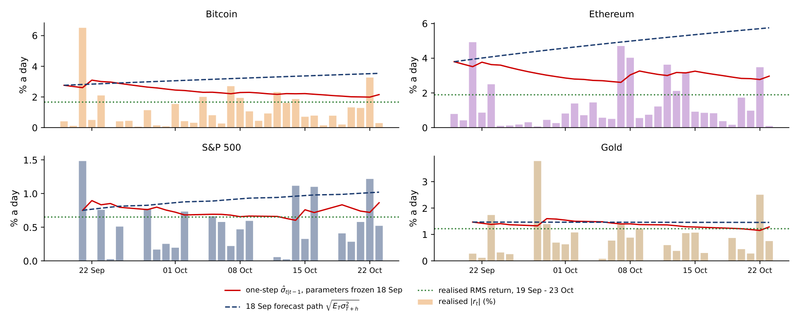
Volatility forecasts are compared with the quasi-likelihood (QLIKE) loss, \(L_t(h) = \ln h_t + r_t^2/h_t\) for a variance forecast \(h_t\), which Patton (2011) shows ranks forecasts correctly even though \(r_t^2\) is only a noisy proxy of the true variance; a lower mean loss is better. The test of Diebold & Mariano (1995) (DM) asks whether the mean difference \(\bar d\) of the losses of two forecasts is zero, using a heteroskedasticity- and autocorrelation-consistent (HAC) standard error; \(\bar d > 0\) means that GARCH loses. A time-varying forecast beats the constant Normal one clearly for Bitcoin, Ethereum and the S&P 500 (DM between \(-3.50\) and \(-6.12\)). EWMA beats GARCH for Ethereum (DM 2.99) and, at the margin, for Bitcoin (1.97): it forgets faster, which helps after a calm month. In the 2020–2026 backtest, however, EWMA-Normal failed the VaR test: being good at forecasting the level of volatility is not the same as being good at the tail.
In brief
| Bitcoin | Ethereum | S&P 500 | Gold | |
|---|---|---|---|---|
| mean QLIKE: GARCH-t | \(2.232\) | \(2.655\) | \(0.220\) | \(1.480\) |
| mean QLIKE: EWMA | \(2.094\) | \(2.435\) | \(0.184\) | \(1.480\) |
| mean QLIKE: constant (Normal) | \(2.667\) | \(3.152\) | \(0.670\) | \(1.431\) |
| GARCH vs EWMA: \(\bar d\) (DM) | \(0.138\) (\(1.97\)) | \(0.220\) (\(2.99\)) | \(0.036\) (\(0.83\)) | \(-0.000\) (\(-0.01\)) |
| GARCH vs constant: \(\bar d\) (DM) | \(-0.435\) (\(-4.11\)) | \(-0.497\) (\(-6.12\)) | \(-0.450\) (\(-3.50\)) | \(0.048\) (\(0.32\)) |
The probability integral transform (PIT) \(u_t = \hat F_{t|t-1}(r_t)\) is the predicted probability of a return at most as large as the one observed; if the predicted density is right, the \(u_t\) are i.i.d. uniform on \([0, 1]\). Berkowitz (2001) transforms them to \(x_t = \Phi^{-1}(u_t)\), which should be i.i.d. standard Normal, and tests mean 0, no autocorrelation and variance 1 together with an LR test against \(\chi^2_3\); the Kolmogorov–Smirnov (KS) test compares the \(u_t\) with the uniform distribution. The chart shows the sorted PIT values against their empirical cumulative distribution function (CDF) and the \(x_t\) against Normal quantiles. For crypto the standard deviation of \(x_t\) is below 1, 0.84 for Bitcoin and 0.78 for Ethereum, so the predicted densities were too wide, but this is not significant in 35 days. For gold no test rejects at 5%, although the mean of \(x_t\) is \(-0.34\), a missed downward drift, and the model had one 1% hit, \(-3.78\%\) on Monday 28 September.
In brief
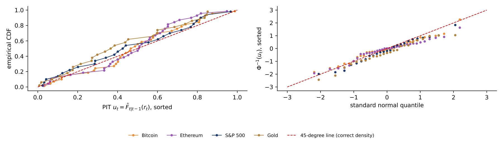
| Bitcoin | Ethereum | S&P 500 | Gold | |
|---|---|---|---|---|
| sd of \(x_t\) (should be 1) | \(0.84\) | \(0.78\) | \(0.98\) | \(0.93\) |
| Berkowitz LR (p) | \(3.16\) (\(0.368\)) | \(4.80\) (\(0.187\)) | \(2.36\) (\(0.501\)) | \(5.59\) (\(0.133\)) |
| Kolmogorov–Smirnov \(D\) (p) | \(0.125\) (\(0.604\)) | \(0.176\) (\(0.203\)) | \(0.119\) (\(0.833\)) | \(0.186\) (\(0.310\)) |
The table compares the predicted and realised volatility of the 60/40 portfolio with 0%, 5% and 10% in Bitcoin over the 25 new trading days, and Bitcoin's predicted and realised share of the risk. The realised volatilities were lower than predicted, 8.1% against 12.2% without Bitcoin. Bitcoin's own volatility halved, from 63.3% to 31.4% a year, yet its share of risk changed little, 13.2% against a predicted 11.9% at a 5% weight: the correlation between Bitcoin and the S&P 500 rose from 0.29 in 2018–2026 to 0.76 in the new window, and the higher correlation offset the lower volatility. The formula on the slide shows why: Bitcoin's share depends on its correlations with the other assets as well as on its own variance. A risk budget is therefore a forecast of the correlation, not only of the volatilities.
In brief
| 60/40 S&P 500/TLT plus Bitcoin | volatility (%, ann.) | Bitcoin share of risk (%) | ||
|---|---|---|---|---|
| Bitcoin weight | predicted | realised | predicted | realised |
| 0% | \(12.2\) | \(8.1\) | – | – |
| 5% | \(12.8\) | \(8.7\) | \(11.9\) | \(13.2\) |
| 10% | \(14.1\) | \(9.6\) | \(29.4\) | \(26.6\) |